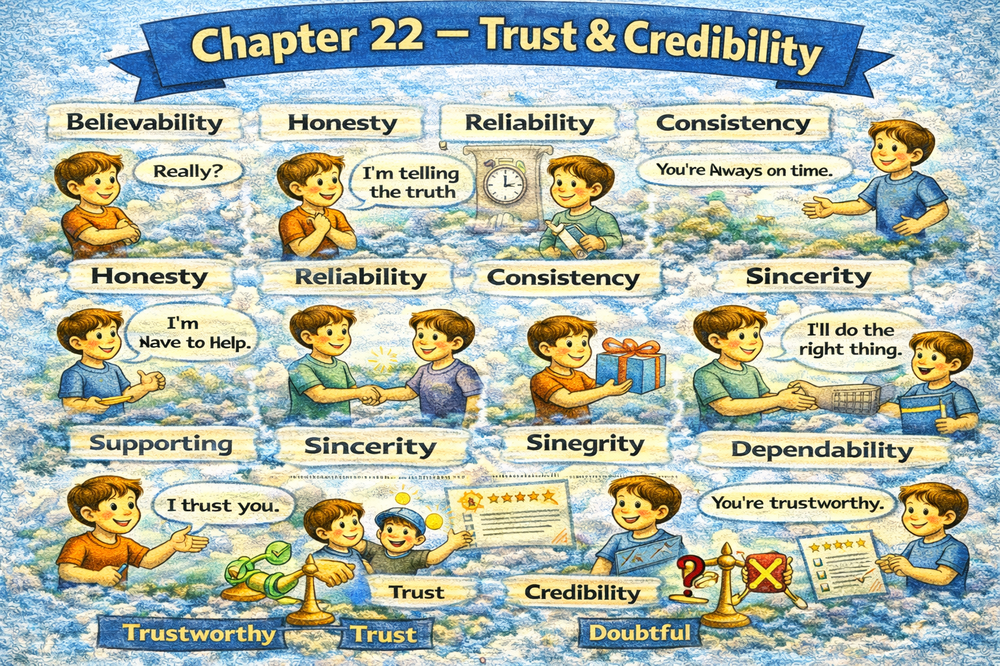

Chapter 22 — Trust & Credibility

Micro Scene 1 — Consistency Builds Trust
1️⃣ Scene Text
Trust develops through consistent behavior over time.
If words and actions align, credibility strengthens.
Inconsistency erodes confidence gradually.
I avoid making commitments I cannot sustain.
When promises are fulfilled repeatedly, reliability becomes visible.
Trust is not declared; it is demonstrated.
If expectations are met consistently, doubt decreases.
Small actions accumulate into reputation.
Consistency stabilizes perception.
Reliability reduces uncertainty.
Trust is constructed through repetition.
2️⃣ Core Verb Pool
develop
align
strengthen
erode
avoid
sustain
fulfill
demonstrate
meet
decrease
accumulate
stabilize
reduce
construct
3️⃣ Structure Patterns
X develops through + noun
If X + verb, Y + verb
X is not + verb; it is + past participle
When X + verb, Y + verb
X reduces + noun
4️⃣ Replace & Extend
Replace alignment:
If behavior matches commitment…
→ If action reflects promise…
→ If performance meets expectation…
Replace erosion:
Inconsistency weakens trust.
→ Broken promises damage credibility.
→ Contradictions reduce reliability.
Replace accumulation:
Repetition builds reputation.
→ Consistency creates stability.
→ Reliability grows over time.
5️⃣ Spoken Mode
Trust builds slowly.
If I say something, I need to do it.
Broken promises weaken credibility.
Small consistent actions matter.
🔎 Structural Notes
• “not declared; demonstrated” reframes performative trust.
• Repetition = structural proof.
• Trust reduces uncertainty.
Micro Scene 2 — Transparency & Honesty
1️⃣ Scene Text
Transparency strengthens credibility by reducing ambiguity.
I explain not only conclusions, but also reasoning.
If information is withheld unnecessarily, suspicion increases.
Honesty includes acknowledging uncertainty.
When limitations are disclosed openly, trust deepens.
I clarify risks before highlighting benefits.
Selective disclosure damages long-term confidence.
Transparency does not require oversharing; it requires clarity.
If intentions are explicit, misunderstanding decreases.
Honesty stabilizes perception.
Credibility grows when communication remains consistent and open.
2️⃣ Core Verb Pool
strengthen
reduce
explain
withhold
increase
include
acknowledge
disclose
clarify
damage
require
decrease
grow
remain
3️⃣ Structure Patterns
X strengthens Y by + verb-ing
If X + verb, Y + verb
When X + verb, Y + verb
X does not require A; it requires B
X grows when + clause
4️⃣ Replace & Extend
Replace disclosure:
I disclose the constraints.
→ I acknowledge the limitations.
→ I clarify potential risks.
Replace suspicion:
If information is unclear…
→ If motives are hidden…
→ If reasoning is vague…
Replace clarity:
Transparency requires clarity.
→ Honesty requires openness.
→ Credibility requires consistency.
5️⃣ Spoken Mode
Let me explain how I reached this conclusion.
If I hide important details, trust drops.
Being honest about uncertainty builds credibility.
Transparency isn’t oversharing — it’s clarity.
🔎 Structural Notes
• “not only…, but also…” signals completeness.
• Transparency reduces perceived threat.
• Honesty includes uncertainty admission.
Micro Scene 2 — Transparency & Honesty
1️⃣ Scene Text
Transparency strengthens credibility by reducing ambiguity.
I explain not only conclusions, but also reasoning.
If information is withheld unnecessarily, suspicion increases.
Honesty includes acknowledging uncertainty.
When limitations are disclosed openly, trust deepens.
I clarify risks before highlighting benefits.
Selective disclosure damages long-term confidence.
Transparency does not require oversharing; it requires clarity.
If intentions are explicit, misunderstanding decreases.
Honesty stabilizes perception.
Credibility grows when communication remains consistent and open.
2️⃣ Core Verb Pool
strengthen
reduce
explain
withhold
increase
include
acknowledge
disclose
clarify
damage
require
decrease
grow
remain
3️⃣ Structure Patterns
X strengthens Y by + verb-ing
If X + verb, Y + verb
When X + verb, Y + verb
X does not require A; it requires B
X grows when + clause
4️⃣ Replace & Extend
Replace disclosure:
I disclose the constraints.
→ I acknowledge the limitations.
→ I clarify potential risks.
Replace suspicion:
If information is unclear…
→ If motives are hidden…
→ If reasoning is vague…
Replace clarity:
Transparency requires clarity.
→ Honesty requires openness.
→ Credibility requires consistency.
5️⃣ Spoken Mode
Let me explain how I reached this conclusion.
If I hide important details, trust drops.
Being honest about uncertainty builds credibility.
Transparency isn’t oversharing — it’s clarity.
🔎 Structural Notes
• “not only…, but also…” signals completeness.
• Transparency reduces perceived threat.
• Honesty includes uncertainty admission.
Micro Scene 3 — Competence & Expertise
1️⃣ Scene Text
Credibility depends not only on honesty, but also on competence.
Trust increases when expertise is demonstrated consistently.
If performance fails repeatedly, confidence declines regardless of intention.
Competence signals reliability in execution.
I support my claims with evidence and experience.
When knowledge is applied effectively, authority strengthens.
Expertise requires continuous learning.
If I overstate my capability, credibility erodes quickly.
Accuracy reinforces reputation.
Competence builds confidence over time.
Reliable execution sustains trust.
2️⃣ Core Verb Pool
depend
increase
demonstrate
fail
decline
signal
support
apply
strengthen
require
overstate
erode
reinforce
build
sustain
3️⃣ Structure Patterns
X depends not only on A, but also on B
If X + verb, Y + verb
When X + verb, Y + verb
X requires + noun
If I + verb, Y + verb
X builds Y over time
4️⃣ Replace & Extend
Replace performance:
If results are inconsistent…
→ If execution is weak…
→ If delivery fails…
Replace expertise:
I demonstrate expertise through results.
→ I validate claims through evidence.
→ I show competence through performance.
Replace erosion:
Overconfidence damages credibility.
→ Exaggeration reduces trust.
→ Misrepresentation weakens authority.
5️⃣ Spoken Mode
Trust isn’t just about honesty — it’s about competence.
If I can’t deliver, confidence drops.
I need to show results, not just talk.
Overstating my ability hurts credibility.
🔎 Structural Notes
• “not only…, but also…” balances character and skill.
• Competence = performance consistency.
• Authority grows from evidence.
Micro Scene 4 — Admitting Mistakes
1️⃣ Scene Text
Admitting mistakes can strengthen credibility rather than weaken it.
If I acknowledge an error promptly, trust stabilizes.
Avoiding responsibility damages reputation more than the mistake itself.
I correct inaccuracies transparently and without defensiveness.
When errors are addressed directly, confidence recovers.
Denial prolongs doubt.
Accountability signals integrity.
If I attempt to conceal a failure, credibility erodes rapidly.
Correction restores alignment between word and action.
Mistakes are inevitable; concealment is optional.
Trust survives error but rarely survives deception.
2️⃣ Core Verb Pool
admit
strengthen
acknowledge
stabilize
damage
correct
address
recover
prolong
signal
conceal
erode
restore
survive
3️⃣ Structure Patterns
X can + verb rather than + verb
If I + verb, Y + verb
X damages Y more than Z
When X + verb, Y + verb
X is inevitable; Y is optional
X survives A but rarely survives B
4️⃣ Replace & Extend
Replace acknowledgment:
I admit the oversight.
→ I recognize the mistake.
→ I accept responsibility.
Replace concealment:
Concealment damages credibility.
→ Covering up increases suspicion.
→ Hiding failure weakens trust.
Replace survival:
Trust survives imperfection.
→ Credibility tolerates error.
→ Integrity withstands difficulty.
5️⃣ Spoken Mode
I made a mistake — and I’m fixing it.
Ignoring it would hurt more than admitting it.
Trust can survive errors, but not deception.
Being honest about failure builds respect.
🔎 Structural Notes
• “rather than” contrasts expectation.
• “inevitable vs optional” reframes human error.
• Transparency converts weakness into strength.
Micro Scene 5 — Protecting Reputation
1️⃣ Scene Text
Reputation reflects accumulated perception over time.
It is shaped by both performance and character.
If credibility is damaged publicly, restoration requires sustained effort.
I protect my reputation by maintaining consistency across contexts.
Short-term advantage should not compromise long-term trust.
When standards decline, perception shifts quickly.
Reputation is fragile when built on exaggeration.
If expectations are set unrealistically high, disappointment follows.
I manage expectations carefully to avoid erosion.
Trust depends on predictable integrity.
Reputation grows slowly but can decline rapidly.
2️⃣ Core Verb Pool
reflect
shape
damage
require
protect
maintain
compromise
decline
shift
build
set
follow
manage
depend
grow
3️⃣ Structure Patterns
X reflects + noun
If X + verb, Y + verb
X requires + noun
When X + verb, Y + verb
X grows slowly but + clause
4️⃣ Replace & Extend
Replace erosion:
Credibility erodes when expectations are unmet.
→ Trust weakens when standards slip.
→ Reputation declines when integrity falters.
Replace expectation management:
I clarify expectations early.
→ I avoid overpromising.
→ I set realistic standards.
Replace fragility:
Reputation is fragile without consistency.
→ Trust collapses under contradiction.
→ Authority weakens under inconsistency.
5️⃣ Spoken Mode
Reputation builds over time.
If I overpromise, disappointment follows.
Short-term wins aren’t worth long-term damage.
Trust grows slowly but can drop fast.
🔎 Structural Notes
• “grow slowly but decline rapidly” highlights asymmetry.
• Reputation = accumulated signal.
• Expectation management stabilizes trust.
Micro Scene 6 — Earning Long-Term Trust
1️⃣ Scene Text
Long-term trust is earned through sustained integrity.
It develops not from isolated success, but from consistent reliability.
If performance remains stable under pressure, confidence deepens.
Trust requires alignment between promise and delivery.
When behavior remains predictable, uncertainty decreases.
I prioritize long-term credibility over short-term recognition.
If expectations are exceeded responsibly, trust strengthens further.
Dependability creates psychological safety.
Trust expands when transparency and competence coexist.
Long-term relationships are built on repeated proof.
Credibility endures when integrity remains intact.
2️⃣ Core Verb Pool
earn
develop
remain
deepen
require
align
decrease
prioritize
exceed
strengthen
create
expand
build
endure
3️⃣ Structure Patterns
X is earned through + noun
X develops not from A, but from B
If X + verb, Y + verb
When X + verb, Y + verb
X endures when + clause
4️⃣ Replace & Extend
Replace reliability:
Trust grows through consistency.
→ Confidence develops through predictability.
→ Credibility strengthens through repetition.
Replace pressure:
If integrity holds under pressure…
→ If standards remain stable during difficulty…
→ If principles persist in uncertainty…
Replace endurance:
Credibility endures over time.
→ Trust compounds gradually.
→ Reputation stabilizes through repetition.
5️⃣ Spoken Mode
Long-term trust takes time.
It’s not about one success — it’s about consistency.
If I deliver under pressure, confidence grows.
Integrity over time builds real credibility.
🔎 Structural Notes
• “not from A, but from B” reframes superficial success.
• “psychological safety” implies emotional stability.
• Endurance signals long-term structure.
🔸 Integration Scene — Trust Structure
Trust develops through consistency.
Transparency reduces suspicion.
Competence strengthens authority.
Admitting mistakes restores credibility.
Reputation reflects accumulated perception.
Integrity sustains confidence.
Reliability decreases uncertainty.
Expectations must be managed.
Trust compounds over time.
Credibility depends on alignment.
Short-term gain weakens long-term stability.
Transparency builds safety.
Consistency signals reliability.
Reputation requires protection.
Integrity anchors trust.
Trust defines sustainable influence.
Integration Verb Focus
align
demonstrate
acknowledge
protect
sustain
earn
reinforce
stabilize